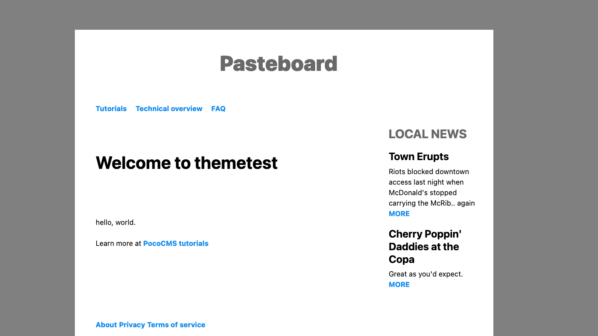
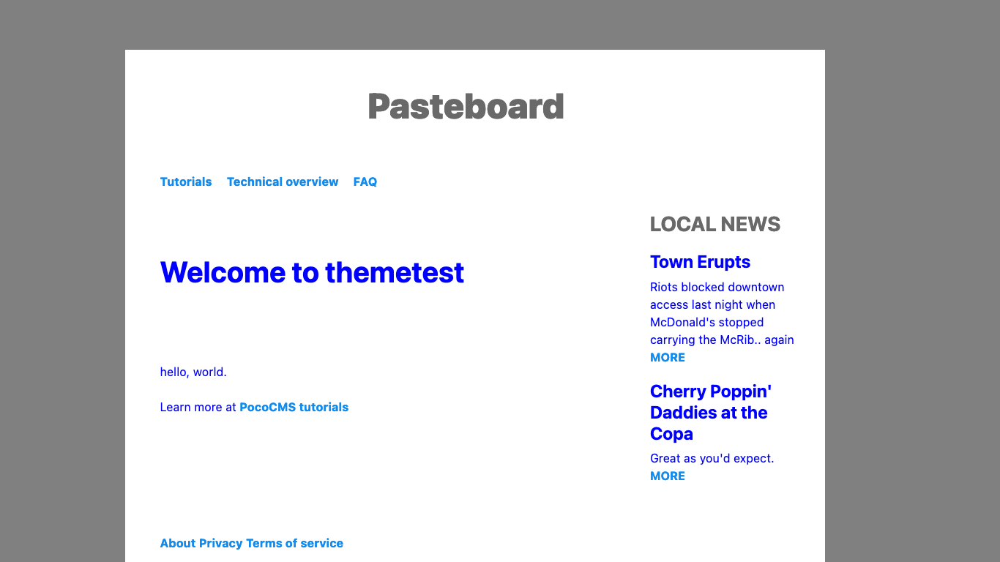
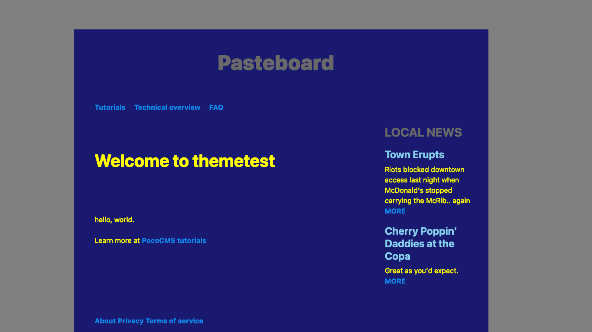

PocoCMS workflow
Here's an idea of how you'll typically create a PocoCMS project and keep it going.
How to start and maintain a PocoCMS project
The process is pretty simple:
- Create a new project
- Copy the theme you like best
- Make changes to the copy of the theme instead of the original. That can mean anything from updating the header and footer to updating the theme's CSS.
This section takes you through those steps to give you a feel for the cycle.
Create a new project
Drop into your terminal/command line and use poco -new:
- For ease and clarity, the tutorials imply you'll be working of you current directory, like so:
poco -new mysite
cd mysite
- But you can specify a site anywhere:
poco -new ~/code/html/mysite
cd ~/code/html/mysite
List themes
To see what themes are available, enter this at the command line:
poco -themes
You'll get a list something like this:
base
clerk
electro
informer
mytheme
newman
paper
pasteboard
pocodocs
rawdog
skyscraper
tufte
- And of course you can see the factory-installed themes live at PocoCMS theme demos
Copy a theme you like
It's best to copy a theme you like instead working with it directly, because you'll want to make numerous small changes. That way if you make any big mistakes and want to revert, you'll have the factory original to fall back on.
- To copy a theme, choose the theme you want to start with. Let's say it's Pasteboard.
- Decide on name of your new theme, which of course in this example will
be
mythemebecause hey, it's all about you. - Copy the theme like this:
poco -from pasteboard -to mytheme
You're then informed:
PocoCMS mytheme created
Now to use your theme, just specify it in the front matter as you would any other:
---
theme: mytheme
---
Add themename.css to the theme's README.md file
- Load the theme's
README.mdfile from your project's root directory by editing the file.poco/themes/mytheme/README.md. Obviously you will replacemysitewith whatever theme name you created. - It will look something like this, in the example where your theme was copied from the Pasteboard theme:
---
header: header.md
nav: nav.md
aside: aside.md
footer: footer.md
stylesheets:
- ../../css/root.css
- ../../css/reset.css
- ../../css/colors.css
- "https://unpkg.com/mvp.css@1.12/mvp.css"
- ../../css/sizes.css
- ../../css/layout.css
- "../../css/medium-skinny.css"
- "pasteboard.css"
- ../../css/media.css
---
- Immediately append the
.cssnamed after your theme to the end of thestylesheetslist:
stylesheets:
- ../../css/root.css
- ../../css/reset.css
- ../../css/colors.css
- "https://unpkg.com/mvp.css@1.12/mvp.css"
- ../../css/sizes.css
- ../../css/layout.css
- "../../css/medium-skinny.css"
- "pasteboard.css"
- ../../css/media.css
- "mytheme.css"
The contents of mytheme.css are pretty much blank and
will have no affect on the theme so far:
/* OVERRIDE FRAMEWORK SIZES */
/* OVERRIDE FRAMEWORK LAYOUT */
/* OVERRIDE FRAMEWORK TYPOGRAPHY AND FONTS */
/* OVERRIDE MEDIA QUERIES. COLORS FOR LIGHT & DARK THEMES */
@media (prefers-color-scheme:light) {
:root {
--fg:blue;
}
}
@media (prefers-color-scheme:dark) {
:root {
--fg:lightgray;
}
}
- Create a page using that theme and view it in your browser:
---
title: "Powered with ♥ by PocoCMS"
theme: mytheme
---
# Welcome to themetest
hello, world.
Learn more at [PocoCMS tutorials](https://pococms.com/docs/tutorials.html)
Resulting in:

Make all theme changes in themename.css
When you add to your theme, changes in mytheme.css
(replacing mytheme with the name of the theme
you just created). It's even set up for maximum
organization. In fact, all PocoCMS themes that use
the theme framework work this way.
- Let's change the default foreground (text) color used for both light and dark themes.
/* OVERRIDE MEDIA QUERIES. COLORS FOR LIGHT & DARK THEMES */
@media (prefers-color-scheme:light) {
:root {
--fg:blue;
}
}
@media (prefers-color-scheme:dark) {
:root {
--fg:yellow;
}
}
Using CSS variables such as --fg and --bg
The --fg designations are known as CSS variables or custom properties.
They aren't required, and the names aren't Web standards or anything.
They're used consistently inside the theme framework though.
For example, --fg stands for "foreground color", which usually means
text but also other design elements. Scores of such CSS variables
are defined in .poco/css/root.css and they cover the majority of
design decisions you're likely to make.
What makes variables useful is that you can change them in just once place,
the @root section of your CSS, and they'll all be changed automatically
when used in a stylesheet. This is a programming principle called
DRY, or Don't Repeat Yourself. It seems a little annoying but
it favors people producing lots of web pages quickly.
- Rebuild the site and take a look:

If you're in dark mode you'll see:

Creating dark and light themes
This section of the file allows you to centralize color choices for both light and dark browser modes. PocoCMS has tried to make sensible default choices in the theme framework, but you're expected to override them in your own themes. Just know that if you're knocking something out fast you don't have to change colors immediately.
/* OVERRIDE MEDIA QUERIES. COLORS FOR LIGHT & DARK THEMES */
@media (prefers-color-scheme:light) {
:root {
--fg:blue;
}
}
@media (prefers-color-scheme:dark) {
:root {
--fg:yellow;
}
}
Update the header
To update the header, header header.md whatever file is specified
for the header in your theme README.md.
It could look something like this:
* **[Base theme header](#)**
* [Reviews](#)
* [Github](#)
* [Profile](#)
- Replace the first and most important item with the name of
your site. Give it the correct URL or just specify as
/:
* [My site](/)
- Replace the other menu items as appropriate:
* [My site](/)
* [About](/about.html)
* [Contact)(/contact.html)
Important: If your site uses a hamburger menu don't skip the next part.
### Update the burger
If you have mobile users, you'll need to create a
[hamburger menu](glossary.html#burger) menu in the
[theme directory](glossary.htmle#theme-directory). It's a compact
way to to let users navigate your site and is expected to
omit big logos and so forth.
Its contents should only be in the form of an unordered list, like so:
There are no rules about what to put there, but use
your common sense. The links should be few, and they should
be the most helpful ones for a user in a hurry, and
not close to a desktop machine.
## What each page should have
* Ensure each page of your site should has a unique
[description](front-matter.html#description) and
[title](front-matter.html#title) for search purposes.